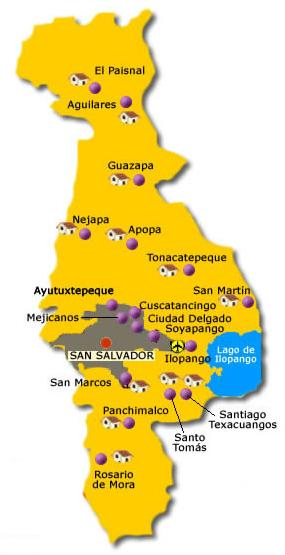

Después de las victorias sobre las huestes pipiles en las batallas de Acajutla y Tacuzcalco, el conquistador Pedro de Alvarado intentó someter a los nativos de la capital del Señorío de Cuzcatlán a su arribo el 18 de junio de 1524. Los cuscatlecos, sin embargo, huyeron a las montañas vecinas y el extremeño tuvo que replegarse hacia la zona de la actual Guatemala. La primera villa de San Salvador se fundó a menos de un año de esta expedición, por una misión no documentada al mando de Gonzalo de Alvarado. La primera mención que existe acerca de este asentamiento es una carta del mismo Pedro de Alvarado en Guatemala el 6 de mayo de 1525 haciendo notar que no se podía celebrar un cabildo por la ausencia de Diego de Holguín quien había partido a tomar el puesto de Alcalde ordinario de la villa de San Salvador.
San Salvador está ubicado en la zona central del país. Su elevación se encuentra entre 600 y 1000 metros sobre el nivel del mar. Aunque la propia ciudad se encuentra a 650 msnm. Limita al norte con los municipios de Nejapa, Mejicanos, Cuscatancingo, y Ciudad Delgado, al este con Soyapango y San Marcos, al sur con Panchimalco y también con San Marcos, y al oeste con Antiguo Cuscatlán y Santa Tecla.
La ciudad al ser la capital, cuenta con numerosos lugares de tipos de producción de alimentos, bebidas y artesanías. También materiales de construcción, industrias farmacéuticas y químicas, así como negocios de mecánica automotriz, y electrodomésticos. Asimismo, es sede de importantes centros comerciales que, además de ofrecer productos a los visitantes, son una fuente de empleo para muchas familias salvadoreñas; entre los que se mencionan el centro comercial Metrocentro, y Centro Comercial Galerías. También existen prestigiosos centros de negocios como el Centro Financiero Gigante y el World Trade Center San Salvador. Por otra parte, en cuanto al servicio de alojamiento en hoteles, para el año 2011 en San Salvador habían en funcionamiento cuatro hoteles de lujo, diez de primera clase, y ochenta de clase turista. En cuanto a los mercado municipales, destaca el Mercado Central, el más grande de la ciudad que cuenta con diez pabellones; otros son: San Jacinto, Belloso, La Tiendona, Sagrado Corazón, San Miguelito, San Antonio, y Tinneti.